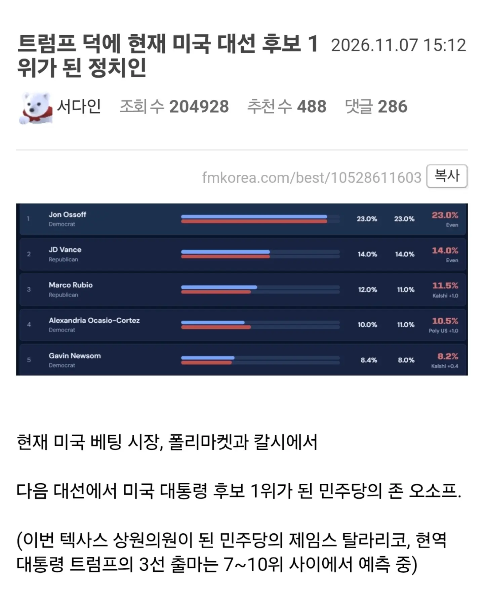
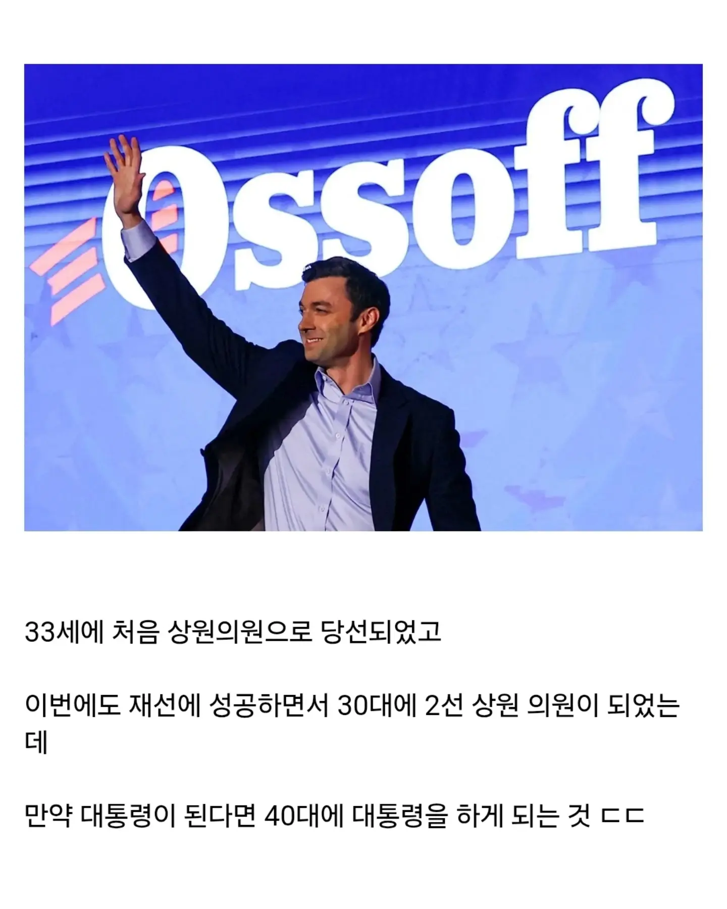
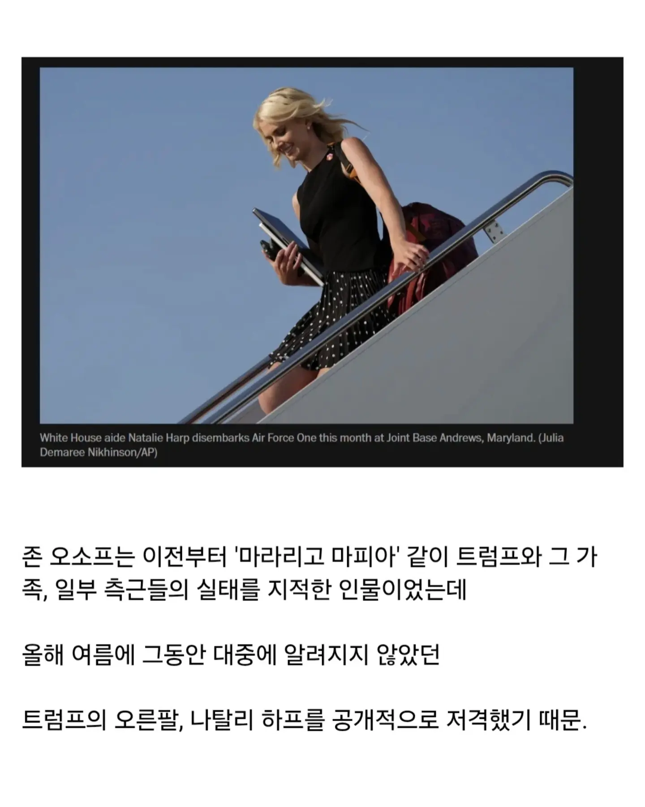
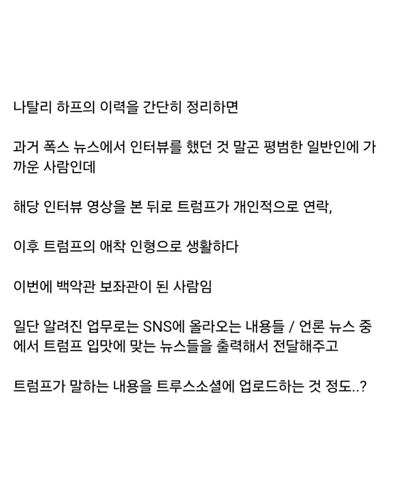
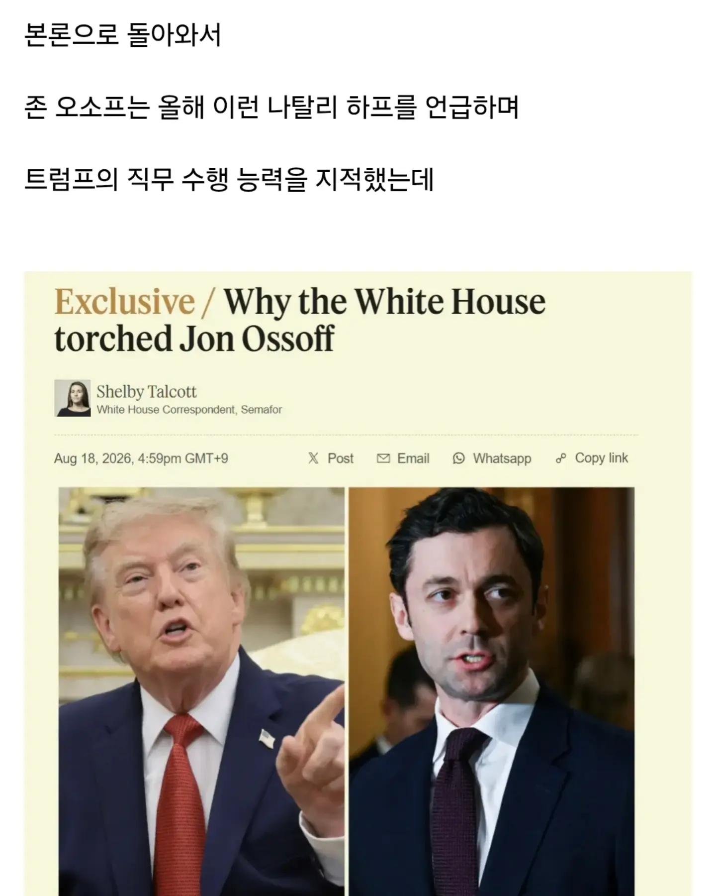
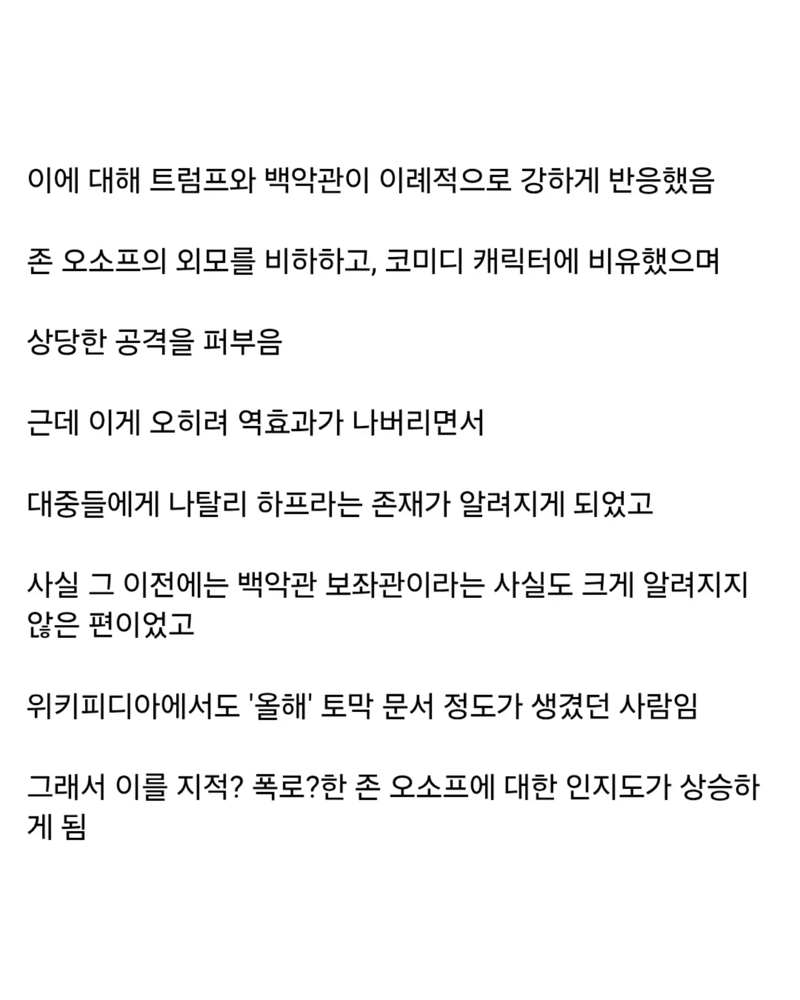
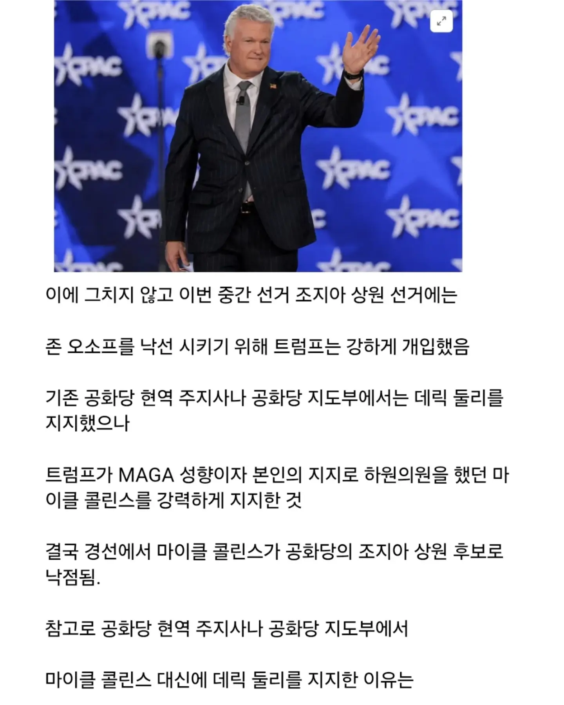
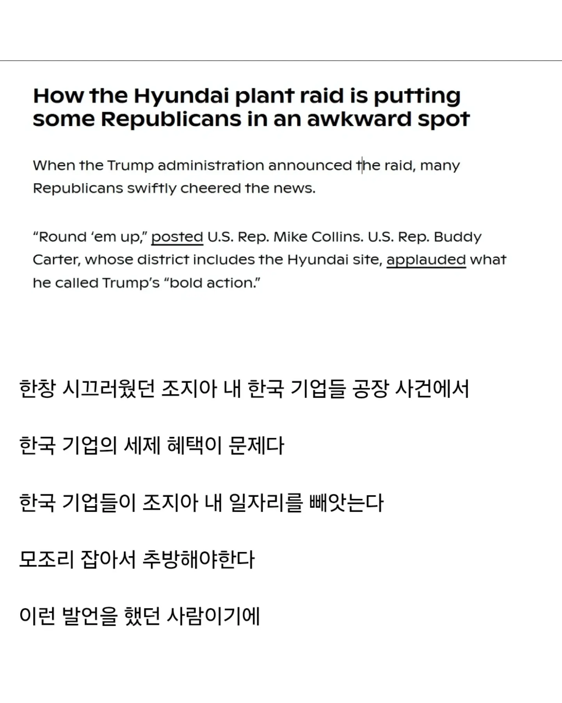
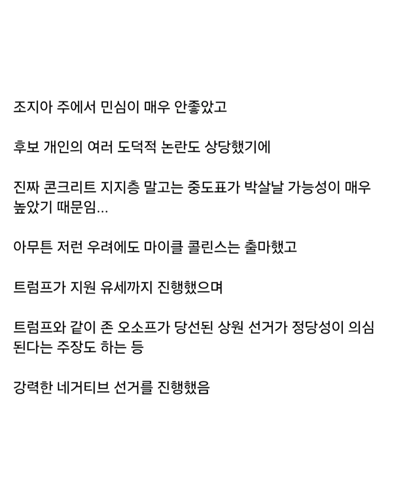
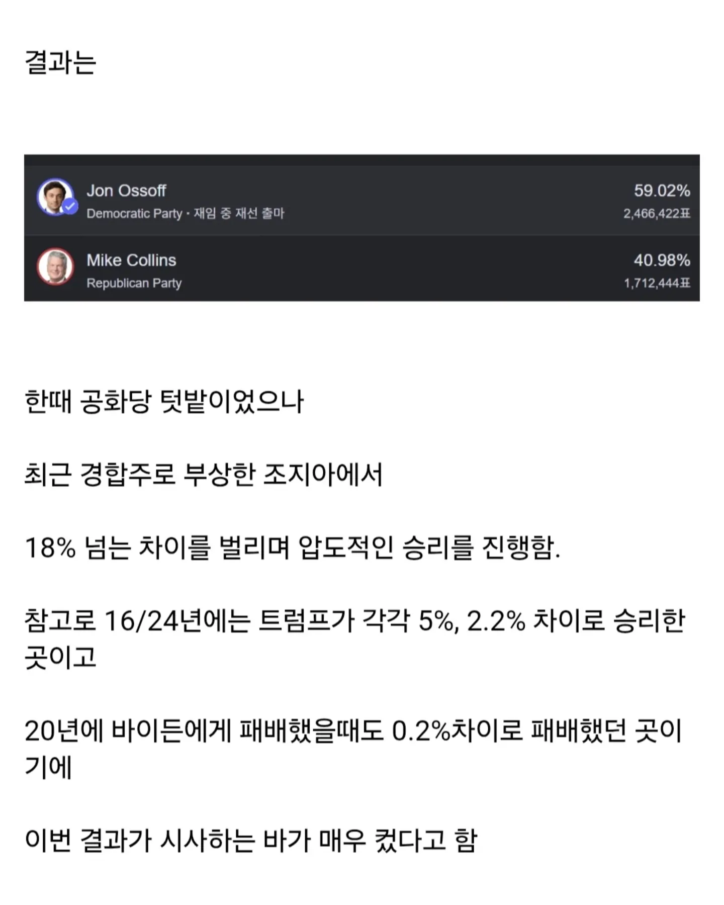
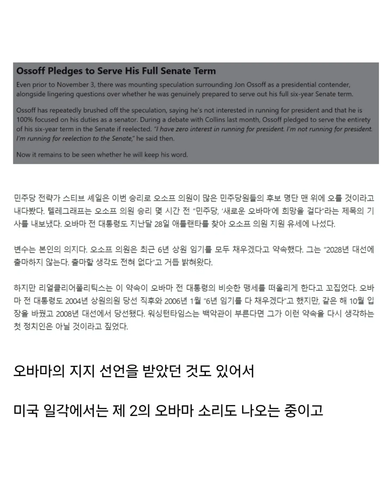
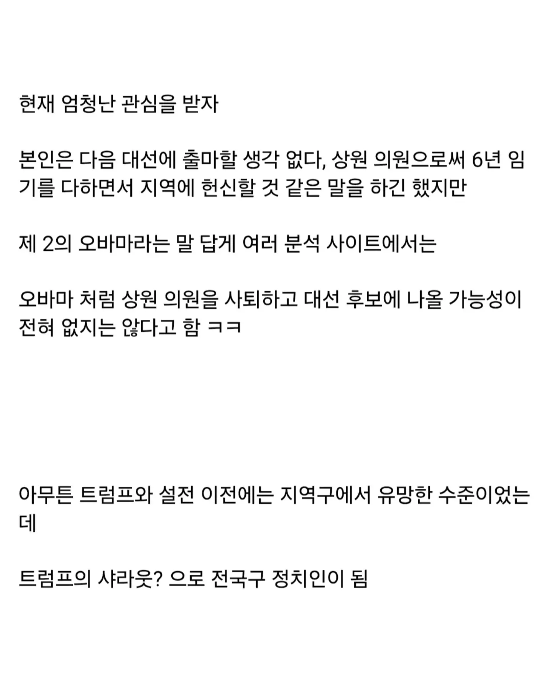












28년 모른다
친한파면 우리입장에서 실질적인 이득이 있는건가? 트럼프때랑 다르게 손해라도 안보면 그게 이득인가?
전국구로는 모르겠는데 조지아에서는 인기 좋더라
초선때는 겨우겨우 힘들게 이겼는데 이번 재선때는 선거 자금도 많이 모았다고 하고
트럼프가 콜린스 유세 세 번이나 와주고 밴스도 유세 와줬는데도 발라버렸음
한국에서 미국발 인터넷 글은 그냥 킬링타임용임 ㅋㅋ 진지하게 보지 마세용
이미 칼시에서 2억쯤 돈이 탔는데 뭔 킬링타임 넌 돈을 시간 죽일라고 뿌림?
정치는 ㄹㅇ 아직 모름. 갑자기 확 뜨긴 했는데 능력(행정이든 정치든)이 확실하게 검증된 건 아니라 아직 대선후보로는 불안해보임. 그냥 좀 더 경력 쌓고 다다음 대선 정도나 노리는게 좋을듯?
최태원이랑 친하다하네
오소독스네
오소프랑 탈라리코.. 대선주자 잠룡 다 만들어주고
텃밭 다 내주고, 상원하원 싹 털리고
도람뿌 이미친 민주당 쁘락치새끼 ㅋㅋㅋㅋㅋ
민주당 지지자들도 이번에 민주당이 이겼다고 카말라해리스는 깝치지말고 다음 대선 나올 생각조차 하지말라고 하는거 보면 얘같은 온건한 후보가 나올거같음
저사람 되면
그럼 저거 데이터센터 규제짓는거 미민당 의견대로 미국내에 싹다반대시킨다는 명분으로 대신 한국에다가 짓는거 해외기업 센터 유치 받아내는거 어떠냐.
국내에 그정도 유치할여력기업없으면 미국에저런회사들 여력넘치는거 오지게홍보전해낸후 받아와서 센터짓고 건설업 , 메모리 수요존내 돌게만들면 개꿀일텐데.
스마트폰 초창기에 애플이 삼성이랑 싸워주면서 삼성이 애플 라이벌 포지션 잡은거랑 비슷한건가
트럼프가 견제 넣으니까 트럼프가 직접 나설정도의 거물이 된거